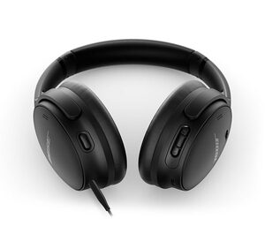

SONIDO
Audífonos Bose QuietComfort® 45
Silencio, comodidad y sonido icónicos.
Ese es el poder de los audífonos Bose QuietComfort®: la mejor combinación de reducción de ruido, rendimiento de audio y comodidad en su clase. Agrega el ecualizador ajustable para que puedas regular la música a tu gusto y vivirás el amor al primer sonido.
Audífonos inalámbricos externos cerrados SoundLink® II
Libertad inalámbrica.
La música te hace sentir libre. Los cables no se deben interponer en tu camino. Los audífonos inalámbricos SoundLink están diseñados para proporcionar un sonido excepcional que se mantiene equilibrado a cualquier nivel de volumen gracias a una combinación de tecnologías exclusivas. Puedes disfrutar de libertad inalámbrica gracias llamadas nítidas en cualquier entorno, materiales duraderos y un ajuste cómodo. Además de un rendimiento inigualable.
Bose QuietComfort® Earbuds II
Sonido a tu medida
Los auriculares Bose QuietComfort II proporcionan una combinación ideal de sonido y reducción de ruido que se adapta perfectamente a ti.
Audífonos Bose QuietComfort® Earbuds
Gobierna el silencio
Un mejor sonido comienza con un mejor silencio. Es por eso que diseñamos los QuietComfort® Earbuds con la reducción de ruido y el audio de alta fidelidad de primera clase; además, las puntas StayHear™ Max te ofrecen una mayor comodidad. Porque cuando eliminas las distracciones, la música se convierte en el centro de atención y tu pasión, también. Patinaje, arte callejero, trabajo en madera y cualquier otra cosa que te haga ser tú mismo. Es una experiencia que no encontrarás en ningún otro audífono inalámbrico.
Audífonos inalámbricos QuietComfort 35 II
Con reducción de ruido
La American Acoustasonic® Telecaster® encarna el espíritu de innovación decidida sobre el que se construyó Fender. Desde cambios de forma acústicos hasta tonos rítmicos eléctricos, esta potente guitarra utiliza un revolucionario motor acústico diseñado por Fender y Fishman® para ofrecer una nueva expresión sonora desde el estudio hasta el escenario.
CD-60S DREADNOUGHT
Acustica
Los audífonos inalámbricos QuietComfort 35 II están diseñados con la reconocida reducción de ruido. Con el Asistente de Google y Amazon Alexa integrado, tienes acceso instantáneo a millones de canciones, listas de reproducción y más sin usar las manos*. Solo tienes que elegir el asistente de voz y hablar.